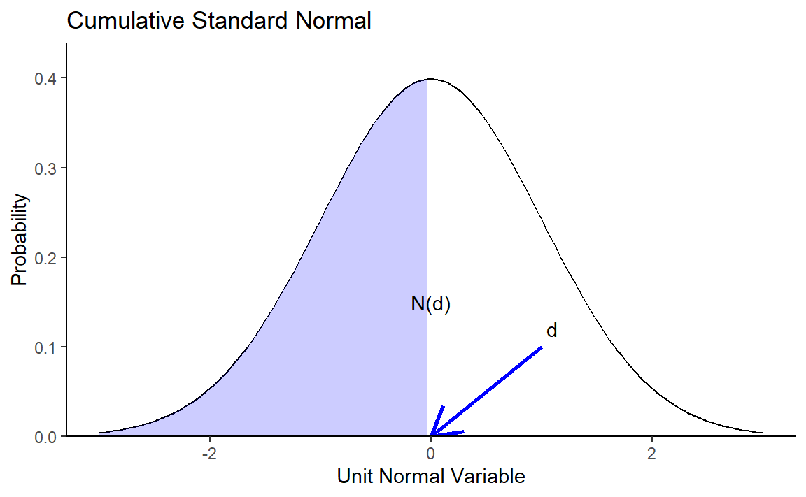

1.3 임의(Random) 숫자 생성하기
이번에는 임의의 숫자를 생성하는 방법에 대해 알아보겠습니다.
1.3.1 Uniform Numbers
균등 분포(Uniform distribution)에서 임의의 숫자를 생성하기 위해서는 runif() 함수를 사용합니다.
runif(5)## [1] 0.2876 0.7883 0.4090 0.8830 0.9405기본적으로 runif() 함수는 0과 1사이에서 임의의 숫자를 생성하며, 괄호 안에 입력된 숫자만큼의 갯수의 난수를 생성합니다.
runif(5, min = 0, max = 25)## [1] 1.139 13.203 22.310 13.786 11.415min과 max인자를 추가할 경우 해당 값 사이에서 난수를 생성합니다.
sample() 함수 역시 Uniform Number를 생성할 수 있습니다.
sample(0:25, 10, replace = TRUE)## [1] 19 13 21 24 25 4 18 24 24 80에서 25까지 숫자중에서 10개의 숫자를 선택하며, replace를 TRUE로 할 경우 복원추출, FALSE로 할 경우 비복원추출을 시행합니다.
1.3.2 Non-Uniform Numbers
비균등 확률 분포에서 난수를 생성하기 위해서는 크게 4가지 함수가 있습니다.
- r*: 난수 생성
- d*: 밀도(Density) 혹은 확률 질량 함수(Probability mass function)
- p*: 누적 분포(Cumulative distribution)
- q*: 분위수(Quantile)
1.3.2.1 정규 분포(Normal Distribution)
R에서 정규 분포 관련 함수는 *norm() 입니다.

rnorm(10, mean = 0, sd = 1)## [1] 0.4008 0.1107 -0.5558 1.7869 0.4979 -1.9666 0.7014 -0.4728 -1.0678 -0.2180rnorm() 함수를 이용하여 평균이 0, 표준편차가 1인 정규분포 함수에서 난수 10개를 생성합니다.
dnorm(0, mean = 0, sd = 1)## [1] 0.3989d = 0인 지점의 밀도를 계산합니다.
pnorm(0, mean = 0, sd = 1)## [1] 0.5d = 0인 지점의 누적 분포를 구합니다.
qnorm(0.5, mean = 0, sd = 1)## [1] 0누적 분포가 0.5인 지점의 분위수를 구합니다.
1.3.2.2 기타 분포
정규 분포 외에도 여러 분포에서 난수를 생성할 수 있습니다. 각 함수별 인자는 help()를 통해 확인할 수 있습니다.
- 이항 분포: rbinom, dbinom, pbinom, qbinom
- 푸아송 분포: rpois, dpois, ppois, qpois
- 지수 분포: rexp, dexp, pexp, qexp
- 감마 분포: rgamma, dgamma, pgamma, qgamma